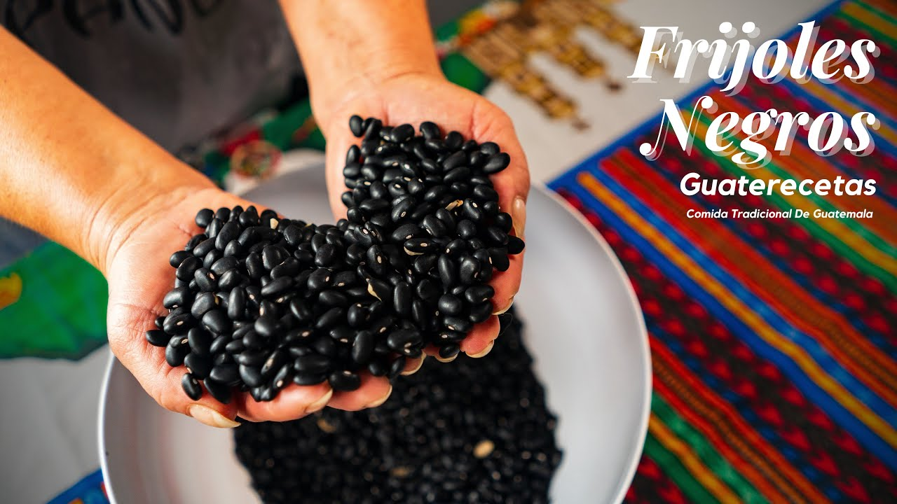

Frijoles
ngrediente esencial en la cocina guatemalteca: el frijol. Este versátil y nutritivo alimento es una parte fundamental de la dieta y la cultura culinaria de Guatemala, y en nuestra tienda de ingredientes autóctonos, ofrecemos una selección de los mejores frijoles para que puedas disfrutar de la auténtica experiencia gastronómica guatemalteca en casa.
En nuestra tienda, encontrarás una variedad de tipos de frijoles, desde los frijoles negros, que son perfectos para la preparación de platillos como el famoso plato guatemalteco llamado "pepián", hasta los frijoles rojos, ideales para la preparación de sopas, guisos y otros platillos tradicionales guatemaltecos. También ofrecemos frijoles blancos y frijoles bayos, que son muy apreciados en la cocina guatemalteca por su textura suave y sabor delicado.
Ya sea que estés buscando ingredientes para preparar tus platillos guatemaltecos favoritos en casa o simplemente quieras disfrutar de la auténtica cocina guatemalteca, nuestra tienda de ingredientes autóctonos tiene todo lo que necesitas. ¡No pierdas la oportunidad de llevarte a casa el sabor auténtico de Guatemala con nuestros frijoles de la mejor calidad!
está disponible la libra de frijol negro por tan solo Q10.00 y los frijoles blancos y colorados a Q12.00
